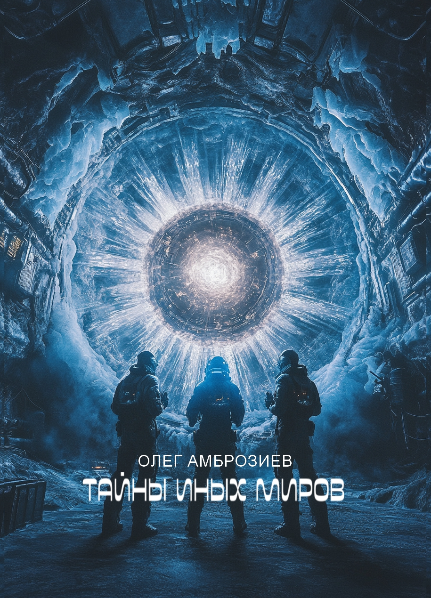

Тайны иных миров
Первая книга в серии, где Земляне отправляются на планету Аркос для контакта с инопланетянами. Множество тайн, сложных решений и раскрытия истин ждут наших героев.
Купить книгуТайны иных миров: Хроники Аркоса
Продолжение истории, где раскрываются новые технологии, гибриды и древние тайны, оставленные Аркторами. Откройте для себя скрытые уголки Аркоса и его удивительные расы.
Купить книгу